Getting started with ggplot2
Leonard Blaschek
A quick word about myself
Traditional plotting interfaces
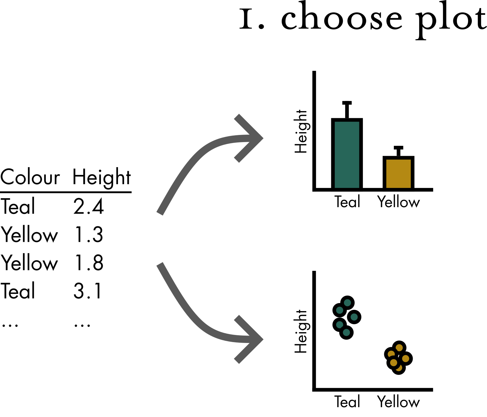
Traditional plotting interfaces
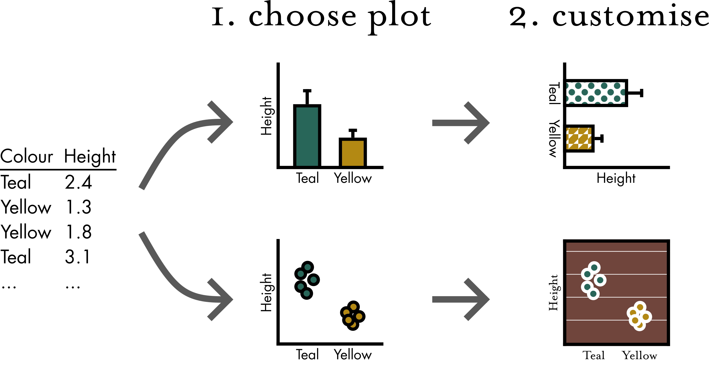
The ‘Grammar of Graphics’
A universal framework that allows creating and combining without limits.
Almost.
The ‘Grammar of Graphics’
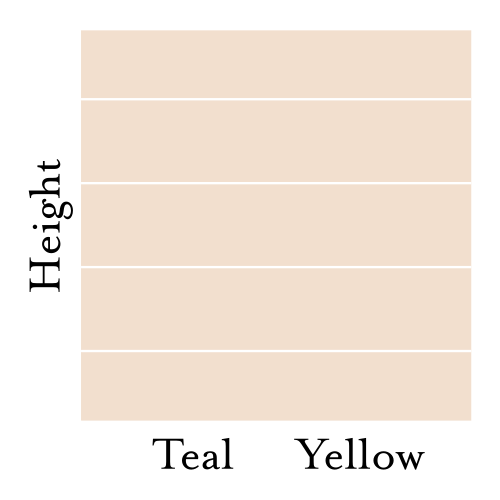  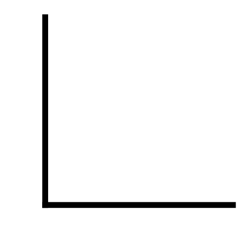 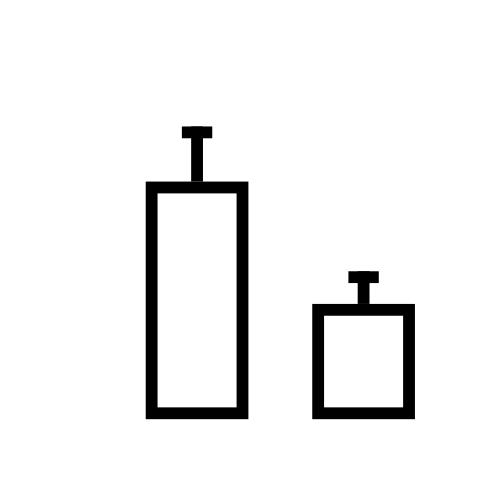
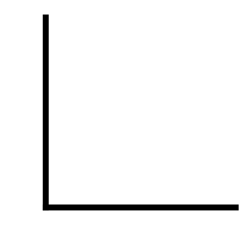 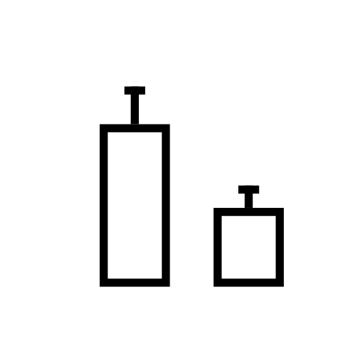
The ‘Grammar of Graphics’
Coordinates Geometries Scales Theme
Data Mapping Statistics Facets
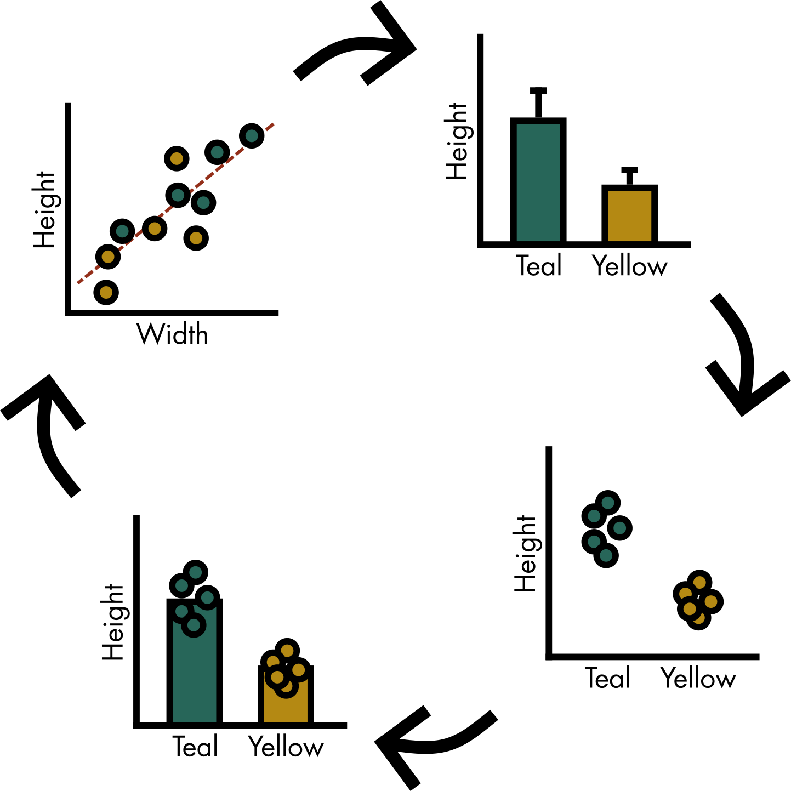
Scope of this workshop
- Load your data into R
- Make a handful of publishable plots
- Combine them into a multi-panel figure
- Save a .pdf in the right size (one/two column)
What we’re not doing today
- Data wrangling (
dplyr/tidyr) - Statistical tests
- 90% of
ggplot2
Some common struggles of scientific plotting are solved in the accompanying script file.
Multiplex CRISPR editing of wood for sustainable fiber production. Sulis DB, […], Barrangou R, Wang JP. 2023. Science 381:216–221. 10.1126/science.add4514
Three panels from main figure 3.
R(studio) crash course
1. Data import
1. Data import
1. Data import
1. Data import
Assign the function output of read_tsv("data/Sulis2023_fig3EF.tsv")
to the object sulis_bar_data.
1. Data import
# A tibble: 18 × 4
line replicate lignin CL
<chr> <dbl> <dbl> <dbl>
1 H-4 1 15.5 4.03
2 H-4 2 16.1 3.75
3 I-18 1 17.9 2.89
4 I-18 2 19.5 2.78
5 I-18 3 22.0 2.92
6 J-25 1 18.6 3.92
7 J-25 2 20.7 3.27
8 K-6 1 12.1 5.97
9 K-6 2 11.4 6.61
10 K-9 1 23.0 2.95
11 K-9 2 22.6 2.97
12 K-9 3 20.9 3.18
13 K-13 1 22.2 3.04
14 K-13 2 23.0 2.83
15 K-13 3 23.5 2.65
16 Wildtype 1 22.1 2.85
17 Wildtype 2 23.7 2.63
18 Wildtype 3 23.5 2.802. Building a plot
2. Building a plot
2. Building a plot
2. Building a plot
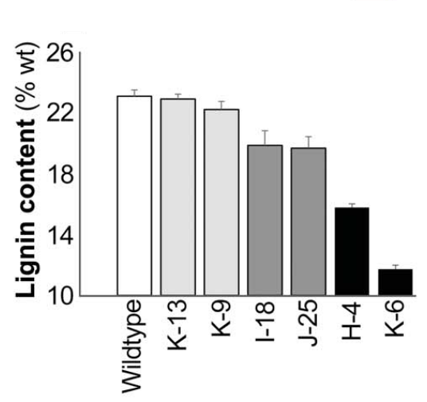 Figure from the paper.
Our first ggplot.
Reorder x-axis
Adding standard error
Adding standard error

Layers are drawn in order, so before = below
Or perhaps we show the data?
Coordinates — Cut y-axis
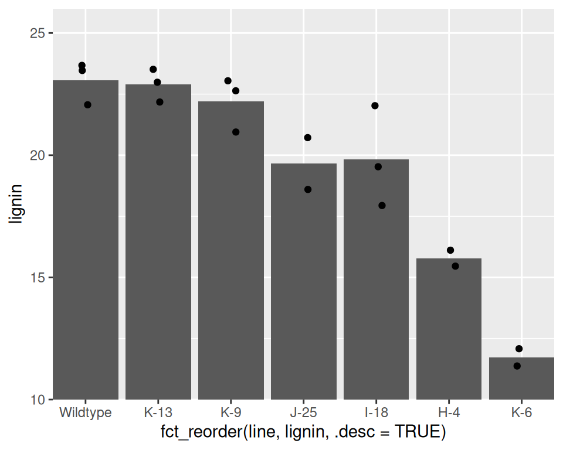
Let’s not do that.
Scales — Fill by severity
Theme — Fix axis titles
library(ggtext)
lines_bar <- ggplot(
data = sulis_bar_data,
aes(
x = fct_reorder(
line,
lignin,
.desc = TRUE
),
y = lignin
)
) +
scale_fill_distiller(
palette = "Greys"
) +
geom_bar(
aes(fill = ..y..),
stat = "summary",
fun = "mean",
colour = "black"
) +
geom_jitter(width = 0.1) +
labs(
x = NULL,
y = "<b>Lignin content</b> (% wt)"
) +
theme(
axis.title.y = element_markdown()
)
lines_bar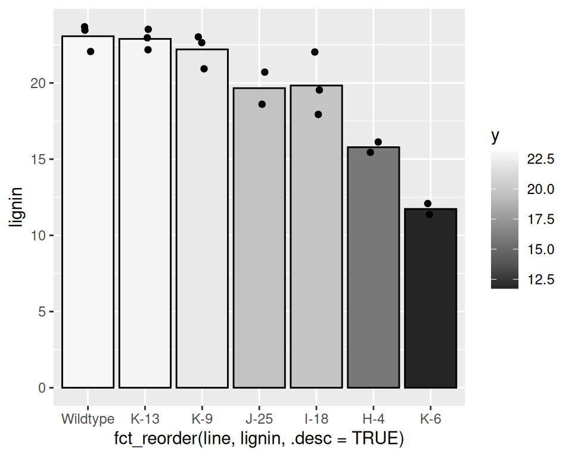
Theme — Rotate axis labels
lines_bar <- ggplot(
data = sulis_bar_data,
aes(
x = fct_reorder(
line,
lignin,
.desc = TRUE
),
y = lignin
)
) +
scale_fill_distiller(
palette = "Greys"
) +
geom_bar(
aes(fill = ..y..),
stat = "summary",
fun = "mean",
colour = "black"
) +
geom_jitter(width = 0.1) +
labs(
x = NULL,
y = "<b>Lignin content</b> (% wt)"
) +
theme(
axis.title.y = element_markdown(),
axis.text.x = element_text(
angle = 90,
vjust = 0.5,
hjust = 1
)
)
lines_bar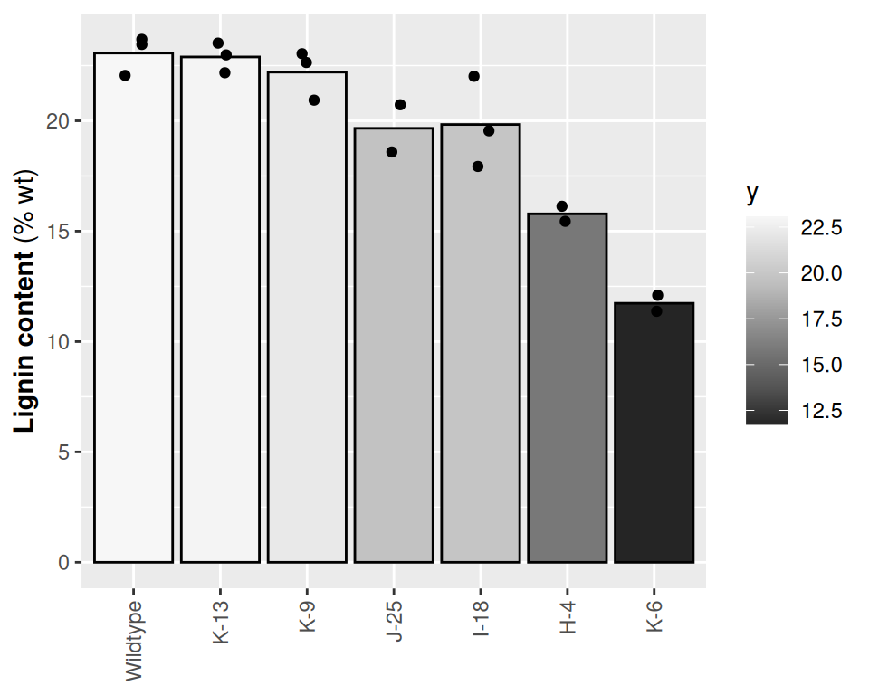
Theme — Remove legend
lines_bar <- ggplot(
data = sulis_bar_data,
aes(
x = fct_reorder(
line,
lignin,
.desc = TRUE
),
y = lignin
)
) +
scale_fill_distiller(
palette = "Greys"
) +
geom_bar(
aes(fill = ..y..),
stat = "summary",
fun = "mean",
colour = "black"
) +
geom_jitter(width = 0.1) +
labs(
x = NULL,
y = "<b>Lignin content</b> (% wt)"
) +
theme(
axis.title.y = element_markdown(),
axis.text.x = element_text(
angle = 90,
vjust = 0.5,
hjust = 1
),
legend.position = "none"
)
lines_bar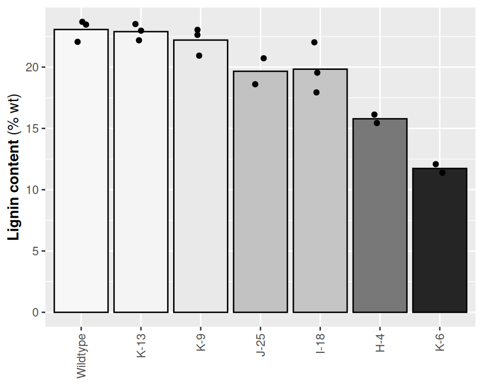
Theme — The last details
lines_bar <- ggplot(
data = sulis_bar_data,
aes(
x = fct_reorder(
line,
lignin,
.desc = TRUE
),
y = lignin
)
) +
scale_fill_distiller(
palette = "Greys"
) +
geom_bar(
aes(fill = ..y..),
stat = "summary",
fun = "mean",
colour = "black",
width = 0.8
) +
geom_jitter(
width = 0.1,
shape = 21,
fill = "black",
colour = "white"
) +
labs(
x = NULL,
y = "<b>Lignin content</b> (% wt)"
) +
scale_y_continuous(
expand = expansion(
mult = c(0, 0.05)
)
) +
theme_sulis() +
theme(
axis.title.y = element_markdown(),
axis.text.x = element_text(
angle = 90,
vjust = 0.5,
hjust = 1
),
legend.position = "none"
)
lines_barFigure from the paper.
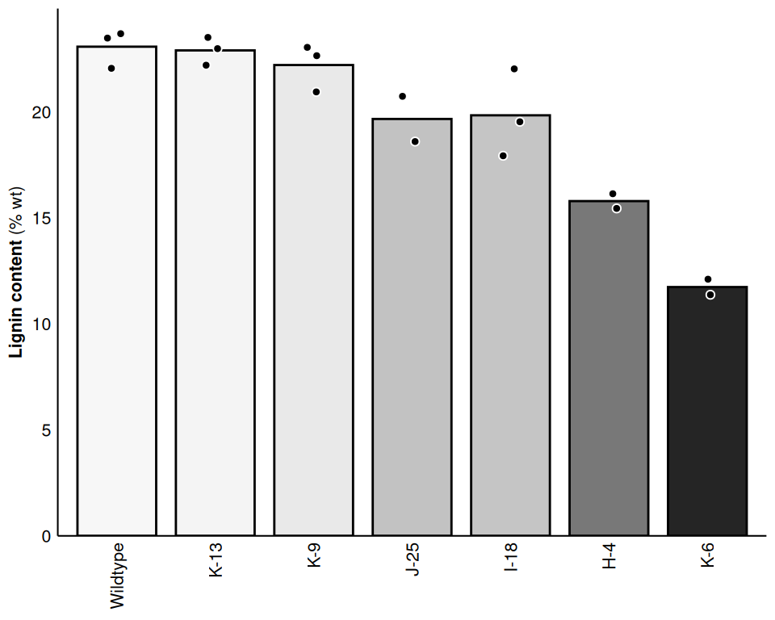
Our first ggplot. Text for ants? We’ll fix that later.
Geoms
- geom_point()
- geom_jitter()
- geom_line()
- geom_errorbar()
- geom_smooth()
- geom_boxplot()
Scales
- scale_*_*(values, name, guide)
Coords
- coord_cartesian(xlim, ylim, expand)
- coord_trans(x, y)
- coord_fixed()
Facets
- facet_wrap()
- facet_grid()
Themes
- minimal
- hrbrmstr
3. Assembling plots
- patchwork
4. Saving plots
- pdf()
Resources to go further
- R for Data Science, Hadley Wickham (2023) – https://r4ds.hadley.nz
- Fundamentals of Data Visualization, Claus O. Wilke (2019) – https://clauswilke.com/dataviz/
- I just need to know how to flip axis labels, quickly! – https://perplexity.ai
Course Supplement
- importing folders of textfiles with map_dfr()
- mutate()
- summarise()
- geom_bar()
- geom_violin()
- position_dodge()
- coord_polar(theta)
- facets with facet labels as axis titles
More useful extensions:
- ggtext
- ggridges
- ggrepel
- ggtext
- ggforce
- gganimate
- ggraph
- ggpubr(/tukeygrps?)
- showtext/systemfonts